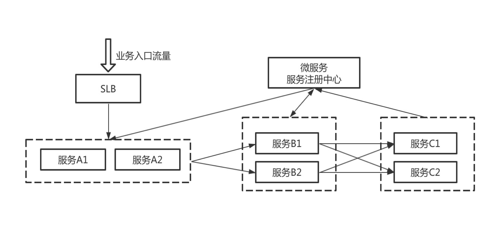
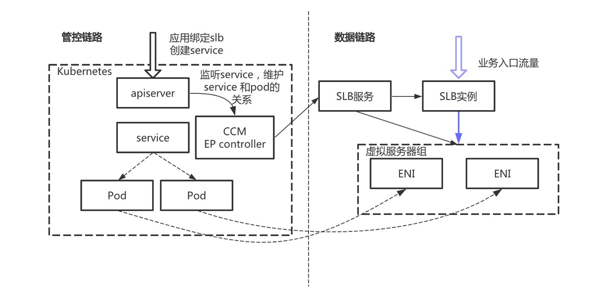
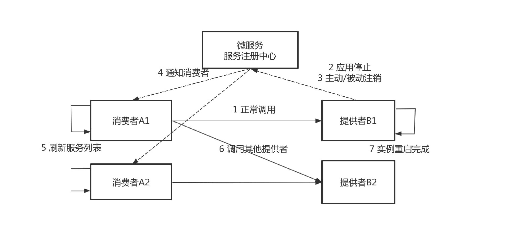
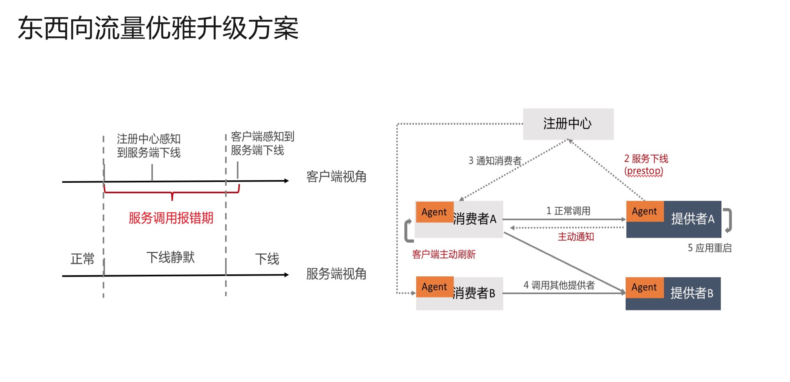
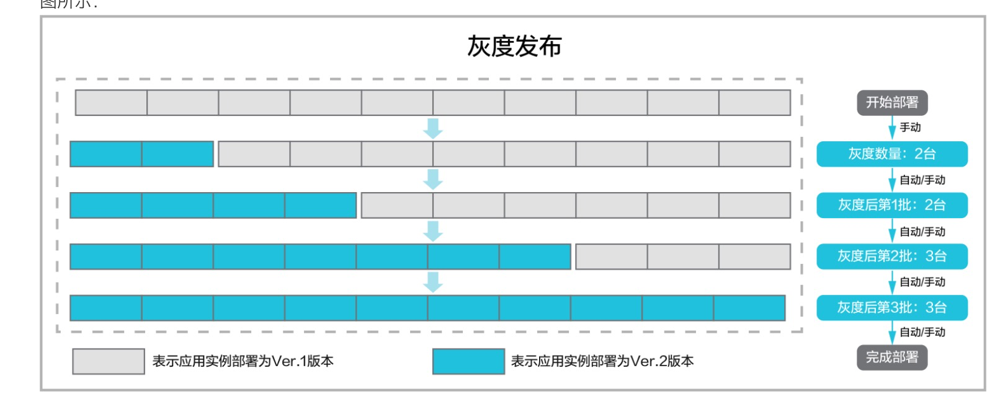

- 01 架构的演进.md.html
- 02 Serverless 的价值.md.html
- 03 常见 Serverless 架构模式.md.html
- 04 Serverless 技术选型.md.html
- 05 函数计算简介.md.html
- 06 函数计算是如何工作的？.md.html
- 07 函数粘合云服务提供端到端解决方案.md.html
- 08 函数计算的开发与配置.md.html
- 09 函数的调试与部署.md.html
- 10 自动化 CI&CD 与灰度发布.md.html
- 11 函数计算的可观测性.md.html
- 12 典型案例 1：函数计算在音视频场景实践.md.html
- 13 典型案例 3：十分钟搭建弹性可扩展的 Web API.md.html
- 14 Serverless Kubernetes 容器服务介绍.md.html
- 15 Serverless Kubernetes 应用部署及扩缩容.md.html
- 16 使用 Spot 低成本运行 Job 任务.md.html
- 17 低成本运行 Spark 数据计算.md.html
- 18 GPU 机器学习开箱即用.md.html
- 19 基于 Knative 低成本部署在线应用，灵活自动伸缩.md.html
- 20 快速构建 JenkinsGitlab 持续集成环境.md.html
- 21 在线应用的 Serverless 实践.md.html
- 22 通过 IDEMaven 部署 Serverless 应用实践.md.html
- 23 企业级 CICD 工具部署 Serverless 应用的落地实践.md.html
- 24 Serverless 应用如何管理日志&持久化数据.md.html
- 25 Serverless 应用引擎产品的流量负载均衡和路由策略配置实践.md.html
- 26 Spring CloudDubbo 应用无缝迁移到 Serverless 架构.md.html
- 27 SAE 应用分批发布与无损下线的最佳实践.md.html
- 28 如何通过压测工具+ SAE 弹性能力轻松应对大促.md.html
- 29 SAE 极致应用部署效率.md.html
27 SAE 应用分批发布与无损下线的最佳实践
应用发布、服务升级一直是一个让开发和运维同学既兴奋又担心的事情。
兴奋的是有新功能上线，自己的产品可以对用户提供更多的能力和价值；担心的是上线的过程会不会出现意外情况影响业务的稳定性。确实，在应用发布和服务升级时，线上问题出现的可能性更高，本文我们将结合 Serverless 应用引擎（以下简称 SAE）就 Serverless 架构下，讨论如何保障上线过程中服务的优雅下线。
在平时的发布过程中，我们是否遇到过以下问题：
- 发布过程中，出现正在执行的请求被中断？
- 下游服务节点已经下线，上游依然继续调用已经下线的节点导致请求报错，进而导致业务异常？
- 发布过程造成数据不一致，需要对脏数据进行修复。
有时候，我们把发版安排在凌晨两三点，赶在业务流量比较小的时候，心惊胆颤、睡眠不足、苦不堪言。那如何解决上面的问题，如何保证应用发布过程稳定、高效，保证业务无损呢？首先，我们来梳理下造成这些问题的原因。
场景分析

上图描述了我们使用微服务架构开发应用的一个常见场景，我们先看下这个场景的服务调用关系：
- 服务 B、C 把服务注册到注册中心，服务 A、B 从注册中心发现需要调用的服务；
- 业务流量从负载均衡打到服务 A，在 SLB 上配置服务 A 实例的健康检查，当服务 A 有实例停机的时候，相应的实例从 SLB 摘掉；服务 A 调用服务 B，服务 B 再调用服务 C；
图中有两类流量，南北向流量（即通过 SLB 转发到后端服务器的业务流量，如业务流量 -> SLB -> A 的调用路径）和东西向流量（通过注册中心服务中心服务发现来调用的流量，如 A -> B 的调用路径），下面针对这两类流量分别进行分析。
南北向流量
南北向流量存在问题
当服务 A 发布的时候，服务 A1 实例停机后，SLB 根据健康检查探测到服务 A1 下线，然后把实例从 SLB 摘掉。实例 A1 依赖 SLB 的健康检查从 SLB 上摘掉，一般需要几秒到十几秒的时间，在这个过程中，如果 SLB 有持续的流量打入，就会造成一些请求继续路由到实例 A1，导致请求失败；
服务 A 在发布的过程中，如何保证经过 SLB 的流量不报错？我们接着看下 SAE 是如何做的。
南北向流量优雅升级方案

如上文所提，请求失败的原因在于后端服务实例先停止掉，然后才从 SLB 摘掉，那我们是不是可以先从 SLB 摘掉服务实例，然后再对实例进行升级呢？
按照这个思路，SAE 基于 K8S service 的能力给出了一种方案，当用户在通过 SAE 为应用绑定 SLB 时，SAE 会在集群中创建一个 service 资源，并把应用的实例和 service 关联，CCM 组件会负责 SLB 的购买、SLB 虚拟服务器组的创建，并且把应用实例关联的 ENI 网卡添加到虚拟服务器组中，用户可以通过 SLB 来访问应用实例；当应用发布时，CCM 会先把实例对应的 ENI 从虚拟服务器组中摘除，然后再对实例进行升级，从而保证流量不丢失。
这就是 SAE 对于应用升级过程中关于南北向流量的保障方案。
东西向流量
东西向流量存在问题
在讨论完南北向流量的解决方案后，我们再看下东西向流量，传统的发布流程中，服务提供者停止再启动，服务消费者感知到服务提供者节点停止的流程如下：

- 服务发布前，消费者根据负载均衡规则调用服务提供者，业务正常。
- 服务提供者 B 需要发布新版本，先对其中的一个节点进行操作，首先是停止 java 进程。
- 服务停止过程，又分为主动注销和被动注销，主动注销是准实时的，被动注销的时间由不同的注册中心决定，最差的情况会需要 1 分钟。
- 如果应用是正常停止，Spring Cloud 和 Dubbo 框架的 Shutdown Hook 能正常被执行，这一步的耗时可以忽略不计。
- 如果应用是非正常停止，比如直接使用
kill -9停止，或者 Docker 镜像构建的时候 java 应用不是 1 号进程且没有把 kill 信号传递给应用。那么服务提供者不会主动去注销服务节点，而是在超过一段时间后由于心跳超时而被动地被注册中心摘除。 - 服务注册中心通知消费者，其中的一个服务提供者节点已下线。包含推送和轮询两种方式，推送可以认为是准实时的，轮询的耗时由服务消费者轮询间隔决定，最差的情况下需要 1 分钟。
- 服务消费者刷新服务列表，感知到服务提供者已经下线了一个节点，这一步对于 Dubbo 框架来说不存在，但是 Spring Cloud 的负载均衡组件 Ribbon 默认的刷新时间是 30 秒 ，最差情况下需要耗时 30 秒。
- 服务消费者不再调用已经下线的节点。
从第 2 步到第 6 步的过程中，Eureka 在最差的情况下需要耗时 2 分钟，Nacos 在最差的情况下需要耗时 50 秒。在这段时间内，请求都有可能出现问题，所以发布时会出现各种报错，同时还影响用户的体验，发布后又需要修复执行到一半的脏数据。最后不得不每次发版都安排在凌晨两三点发布，心惊胆颤，睡眠不足，苦不堪言。
东西向流量优雅升级方案

经过上文的分析，我们看，在传统发布流程中，客户端有一个服务调用报错期，原因就是客户端没有及时感知到服务端下线的实例。在传统发布流程中，主要是借助注册中心通知消费者来更新服务提供者列表，那能不能绕过注册中心，服务提供者直接通知服务消费者呢？答案是肯定的，我们主要做了两件事情：
- 服务提供者应用在发布前后主动向注册中心注销应用，并将应用标记为已下线的状态；将原来的停止进程阶段注销服务变成了 prestop 阶段注销服务。
- 在接收到服务消费者请求时，首先会正常处理本次调用，并通知服务消费者此节点已下线，服务消费者会立即从调用列表删除此节点；在这之后，服务消费者不再调用已经下线的节点。这是将原来的依赖于 注册中心推送，做到了服务提供者直接通知消费者从调用列表中摘除自己。
通过上面这个方案，就使得下线感知的时间大大减短，从原来的分钟级别做到准实时，确保应用在下线时能做到业务无损。
分批发布和灰度发布
上文介绍的是 SAE 在处理优雅下线方面的一些能力，在应用升级的过程中，只有实例的优雅下线是不够的，还需要有一套配套的发布策略，保证我们新业务是可用的，SAE 提供分批发布和灰度发布的能力，可以使得应用的发布过程更加省心省力；
我们先介绍下灰度发布，某应用包含 10 个应用实例，每个应用实例的部署版本为 Ver.1 版本，现需将每个应用实例升级为 Ver.2 版本。

从图中可以看出，在发布的过程中先灰度 2 台实例，在确认业务正常后，再分批发布剩余的实例，发布的过程中始终有实例处于运行状态，实例升级过程中依照上面的方案，每个实例都有优雅下线的过程，这就保证了业务无损。
再来看下分批发布，分批发布支持手动、自动分批；还是上面的 10 个应用实例，假设将所有应用实例分 3 批进行部署，根据分批发布策略，该发布流程如图所示，就不再具体介绍了。

最后针对在 SAE 上应用灰度发布的过程进行演示，点击即可观看演示过程：https://developer.aliyun.com/lesson202619009